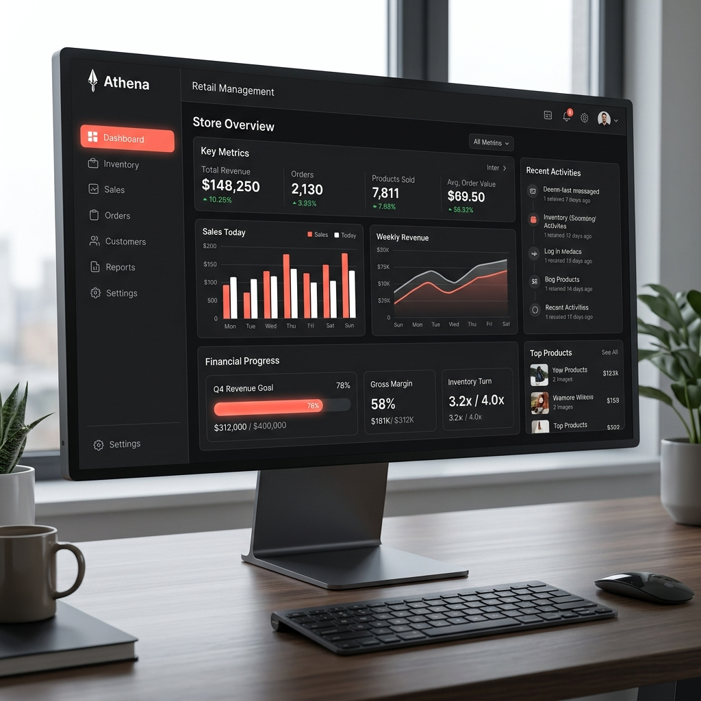
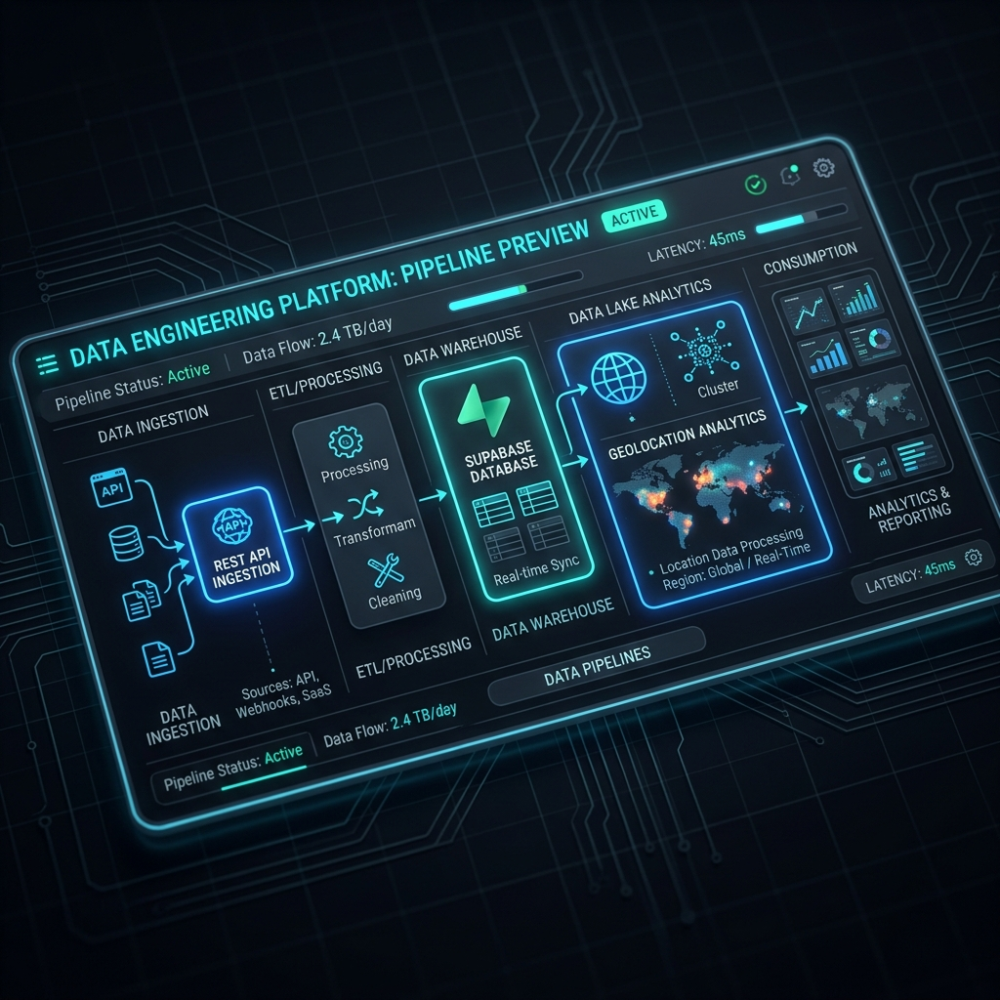
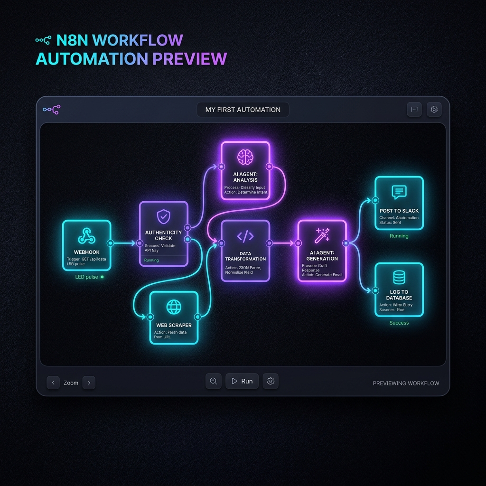

Projetos & SaaS
Soluções de BI, Engenharia de Dados, Automações Inteligentes e Produto Autoral

Athena – SaaS para o Pequeno Varejista
Sistema de gestão financeira e inteligência estratégica projetado para transformar o pequeno varejista. Arquitetura moderna integrando Supabase (PostgreSQL), n8n, dashboards financeiros e metas automatizadas.

Data Lake & Geolocalização de Produtos
Pipeline de dados em Node.js e Python para ingestão automatizada de REST APIs e geolocalização inteligente de produtos e prospecção corporativa.

Orquestração ETL & Agentes de IA com n8n
Workflows de automação com n8n integrando webhooks, APIs REST, tratamento automatizado de transcrições e Agentes de IA generativa para automação de decisões.

Dashboard de Margem de Lucro
Dashboard em Power BI oferecendo análise combinada da receita e custos. Cálculo de margem de lucro com medidas DAX avançadas e visualização executiva intuitiva.

Dashboard NBA: Jordan vs LeBron
Análise comparativa temporada a temporada das carreiras lendárias de Michael Jordan e LeBron James, detalhando estatísticas históricas e impacto esportivo.

Automação de Dados com Power Apps
Aplicação Power Apps integrada ao Power Automate e SQL Server para substituição de processos manuais de inserção de dados, garantindo auditoria e integridade.